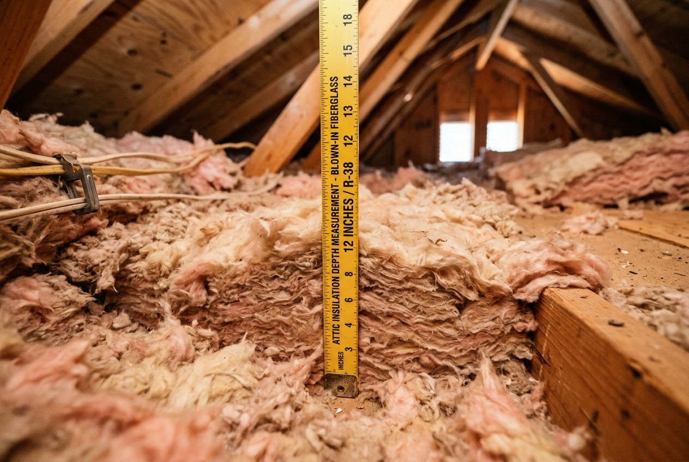

Yes, and it matters more for lake-adjacent properties than for inland Conroe homes. Communities like Seven Coves, April Sound, Bentwater, and Corinthian Point experience higher attic humidity year-round due to lake proximity. Over time, this compresses the insulation faster and can cause moisture damage to the underlying material. Adding new blown-in insulation over wet or water-damaged insulation traps moisture and can create conditions for mold growth. We include a moisture check in every free inspection — if existing insulation is water-damaged, we'll show you photos and recommend removal before adding new material.
Attic Insulation in Conroe, TX — Where Lake Humidity Makes Insulation Fail Faster
Conroe's housing stock spans six decades — from 1960s ranch homes in downtown Conroe to 2020s builds in Grand Central Park. That range matters because insulation requirements and current R-values vary dramatically by era. A River Plantation home from 1980 and a Woodforest home from 2012 are starting from completely different baselines. We inspect first, measure the actual R-value, and tell you exactly what your home needs and what it costs.
- Downtown Conroe homes built 1965–1985 often measure R-5 to R-9 today — some of the lowest in Montgomery County
- Lake Conroe communities (Seven Coves, April Sound) face elevated attic humidity that accelerates insulation compression and moisture damage
- Woodforest and Grand Central Park are newer but many homes still fall 8–16 R-value points short of the DOE R-38 minimum
- Our Cypress TX location is 22 miles from downtown Conroe — most jobs are scheduled within 1–2 weeks
Why Conroe TX Attics Have Bigger Insulation Gaps Than Most Houston Suburbs
Most Greater Houston suburbs developed primarily in the 1980s and 1990s. Conroe is different — it has a working downtown that dates to the 1880s, significant residential development from the 1960s and 1970s, and an ongoing new-home construction wave in Woodforest and Grand Central Park that continues today. The result is one of the most varied housing stocks in the region.
The pre-1978 Conroe homes — the ranch-style houses in and around downtown, off West Davis Street, and near the older I-45 corridor — were built before the first federal energy codes took effect. Many have R-7 or R-9 original insulation, or in some cases no insulation at all in sections of the attic. At current July attic temperatures of 135–140°F, that is effectively no thermal barrier between the roof and the living space below.
Then there is the Lake Conroe factor. Communities like Seven Coves, April Sound, Bentwater, and Corinthian Point sit adjacent to the lake's 21,000-acre surface. Lake proximity raises attic humidity year-round. High humidity compresses the insulation faster, encourages mold growth in already-degraded material, and in some cases causes moisture damage to roof sheathing. Before we add new insulation to a lake-area home, we check the existing material for moisture — adding blown-in insulation over wet or water-damaged insulation creates more problems than it solves.
Downtown / older I-45 corridor
1965–1985 builds. Original R-7 to R-11, now often R-5 to R-9 after decades of settling. Highest priority for upgrade.
River Plantation
1975–1992. Original R-11 to R-13, settled to R-7 to R-10. Many homes also have ductwork in the attic adding to heat load.
Seven Coves / April Sound
1980–1998 lakeside builds. Lake humidity accelerates degradation — moisture inspection is essential before adding material.
Woodforest
2007–2018. Started at R-30 to R-38. Now 8–18 years old, many homes measure R-22 to R-30 — still short of DOE minimum.
Insulation Services We Install in Conroe TX
We inspect first, then recommend the right solution based on your home's age, layout, and whether moisture is a factor.

Blown-In Insulation Conroe TX
Blown-in insulation is the most cost-effective attic upgrade for Conroe homes, covering every corner around pipes, wires, and ductwork to bring a River Plantation or Stewart's Forest home from R-9 to R-38 in a single visit. Starting at $0.65/sq ft installed. See full details on our blown-in insulation service page.

Spray Foam Insulation Conroe TX
Applied under the roof deck, spray foam brings the entire attic into conditioned space — the right choice when your HVAC equipment sits in the attic, especially for lake-area homes where controlling attic humidity matters as much as heat. Open-cell from $1.20/sq ft; closed-cell from $2.20/sq ft. More on our spray foam insulation page.

Injection Foam Wall Insulation Conroe TX
For Conroe's older brick ranch homes with empty wall cavities, foam is injected through small holes drilled from the exterior — no interior drywall removal. Particularly valuable in downtown Conroe homes where wall insulation was never installed. Details on our injection foam insulation service page.

Air Sealing Conroe TX
Insulation slows heat transfer; air sealing stops drafts that bypass insulation entirely. In older Conroe homes, attic floor penetrations around plumbing stacks, electrical boxes, and recessed lights are often unsealed — bypasses that account for 30 to 40% of heat gain in some homes. We air seal before adding insulation on every job.

Attic Fan Installation Conroe TX
An attic fan moves heat out of a vented attic using sunlight only — no added electricity cost. It pairs well with a blown-in job to address both the insulation gap and the ventilation problem. See our attic fan installation page for specs and pricing.
Insulation Removal Conroe TX
Pest-contaminated, water-damaged, or compacted insulation has to come out before new material goes in, including any moisture concerns common in lake-area Conroe homes. We check and photograph the existing condition during the free walkthrough. Full process on our insulation removal page.
Attic Insulation Cost in Conroe TX — Published Pricing
Pricing transparency lets you make a confident decision before anyone sets foot in your attic. Here is what attic insulation actually costs in Conroe TX:
| Service | Price per sq ft | Typical 1,800 sq ft Conroe attic | Best for |
|---|---|---|---|
| Blown-in insulation (to R-38) | $0.65–$0.95 | $1,170–$1,710 | Most Conroe homes — attic floor upgrade |
| Open-cell spray foam (roof deck) | $1.20–$1.85 | $2,160–$3,330 | Homes with attic HVAC or lake-area humidity control |
| Closed-cell spray foam (roof deck) | $2.20–$3.10 | $3,960–$5,580 | Maximum moisture and thermal control |
| Old insulation removal | $1.00–$2.00 | $1,800–$3,600 | Damaged, moisture-affected, or pest-contaminated insulation |
Prices cover materials and labor. Your written quote itemizes every line based on your attic's square footage, current insulation depth, access conditions, and whether removal is needed. Lake-area homes may require a moisture assessment before a final quote can be issued.
Energy Savings and Payback in Conroe
A Conroe homeowner upgrading from R-9 to R-38 on a 2,000 sq ft attic typically saves $110–$150/month on cooling costs from June through September. Even upgrading from R-19 to R-38 delivers $80–$110/month in peak summer savings. Most blown-in projects pay for themselves within 2–4 years before CenterPoint rebates or federal tax credits.
CenterPoint Energy Rebates & Federal Tax Credits
Conroe is served by CenterPoint Energy. Their Home Energy Efficiency Program offers rebates on qualifying insulation upgrades — we confirm current rebate amounts during your free inspection. The federal Inflation Reduction Act offers a tax credit of up to 30% of insulation costs (maximum $1,200) through 2032 for homeowners upgrading to the recommended R-value for their climate zone.
Conroe TX Subdivision Insulation Guide — What Your Home Likely Has
Conroe's six decades of residential development means attic conditions vary more here than in most Houston suburbs. Use this as a starting reference — your free inspection gives you the exact current R-value for your home, including a moisture check for lake-adjacent properties.
| Subdivision / Area | Primary Build Era | Original R-Value | Likely R-Value Today | Recommended Upgrade |
|---|---|---|---|---|
| Downtown Conroe, older I-45 corridor | 1965–1985 | R-7 to R-11 | R-5 to R-9 | R-38 blown-in (urgent) |
| River Plantation | 1975–1992 | R-11 to R-13 | R-7 to R-10 | R-38 blown-in (priority) |
| Seven Coves, April Sound, Bentwater | 1980–1998 | R-11 to R-19 | R-8 to R-14 + possible moisture | R-38 blown-in + moisture inspection |
| Stewart's Forest, Panorama Village | 1990–2005 | R-19 | R-13 to R-16 | R-38 blown-in or spray foam |
| Woodforest | 2007–2018 | R-30 to R-38 | R-22 to R-30 | R-49 top-up recommended |
| Grand Central Park | 2015–present | R-38+ | R-30 to R-38 | Inspect — may still benefit from R-49 top-up |
R-values above are typical estimates based on era build codes. Actual settled R-value depends on original installation quality, attic ventilation, moisture history, and any prior pest activity. Lake-area homes should always be inspected for moisture before insulation is added.
Conroe TX Homeowners Ask Us These Questions
blown-in insulation in Conroe TX costs $0.65–$0.95 per square foot installed. For a typical 1,800 sq ft attic in a River Plantation or Stewart's Forest home, that is $1,170–$1,710 for a full upgrade from R-13 to R-38. Open-cell spray foam ranges from $1.20–$1.85 per sq ft; closed-cell from $2.20–$3.10. If old insulation removal is needed first — common in downtown Conroe homes from the 1960s and 1970s — add $1.00–$2.00 per sq ft. Every job comes with a free inspection and a written itemized quote before any work begins.
Blown-in insulation on the attic floor is the right choice for most Conroe homeowners — it's cost-effective, fast, and upgrades R-value in a single visit. Spray foam applied under the roof deck makes more sense in two situations specific to Conroe: when your HVAC air handler sits in the attic (spray foam brings the attic into conditioned space and eliminates duct losses), or when you're in a lake-adjacent community and want to control attic humidity as well as heat. Closed-cell spray foam also acts as a vapor barrier, which is valuable for Seven Coves and April Sound homes where moisture is a known issue.
A downtown Conroe home built in the 1970s was likely insulated to R-7 to R-11 at installation — the code minimum of that era. After 45–50 years of settling and compression, many of these homes now measure R-5 to R-9 when we inspect them. That is less than a quarter of the R-38 the DOE recommends for this climate zone (read our full Houston Attic R-Value Guide for Climate Zone 2A details). Some 1960s builds have no insulation at all in parts of the attic. A free inspection gives you the exact number; it takes about 30–45 minutes and you'll have the measurement before you leave.
Step 1: You call or submit the form — we schedule a free attic inspection, usually within 3–5 days. Step 2: A technician inspects your attic, measures current R-value, checks for moisture (especially important for lake-area homes), photographs the existing conditions, and notes any air leaks or duct issues. Step 3: We give you a written, itemized quote with the exact price for materials and labor. Step 4: You approve the quote — no pressure if you don't. Step 5: Installation is scheduled within 1–2 weeks; same-week availability is common. Step 6: Most Conroe jobs finish in one day. We protect your space with drop cloths, clean up completely, and walk you through the finished work.
How Close We Are to Your Neighborhood in Conroe, TX
Based in Cypress TX. Here's the real drive time from our office to the neighborhoods we serve in Conroe.
Schedule Your Free Conroe TX Attic Inspection
We are a locally owned, fully insured insulation contractor based in Cypress. We inspect at no charge, measure your current insulation depth, check for moisture in lake-area homes, and give you a written quote before any work begins. Downtown Conroe, River Plantation, Seven Coves, Woodforest — we cover all of Conroe and Montgomery County.
What happens after you submit: Our team calls within a few hours to schedule your free attic inspection. Most inspections take 30–45 minutes. You leave with an accurate calculation of your attic's current thermal performance, photos of the current condition, a moisture assessment if applicable, and a written itemized quote.
Last updated: October 2026